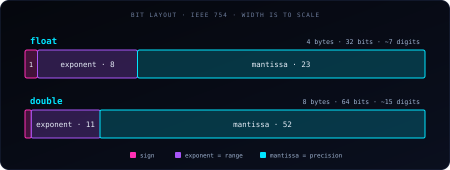

float and double both store decimal (floating-point) numbers in C, but they differ in precision, memory usage, and range.

double spends more bits on the mantissa (precision) and the exponent (range) than a floatThe fundamental difference is that double provides roughly twice the precision of float. Modern desktop computers handle both at similar speeds, so double is generally preferred unless memory is tightly restricted.
Quick Comparison
| Feature | float | double |
|---|---|---|
| Precision | Single (~6–7 decimal digits) | Double (~15 decimal digits) |
| Memory size | 4 bytes (32 bits) | 8 bytes (64 bits) |
| IEEE 754 bit layout | 1 sign, 8 exponent, 23 mantissa | 1 sign, 11 exponent, 52 mantissa |
| Range | ≈ 1.2 × 10⁻³⁸ to 3.4 × 10⁺³⁸ | ≈ 2.2 × 10⁻³⁰⁸ to 1.8 × 10⁺³⁰⁸ |
printf specifier |
%f |
%f (%lf also accepted) |
scanf specifier |
%f |
%lf |
| Literal | 3.14f (needs f or F) |
3.14 (the default) |
The ranges above are the smallest and largest normal positive values. You can check every number on your own machine with sizeof and the constants in <float.h>.
1. Precision and the Rounding Trap
A float has 23 bits for its fractional part (the mantissa), so it starts losing accuracy after about 7 significant digits. A double has 52 bits and stays accurate to about 15.
#include <stdio.h>
int main() {
// Both variables are assigned the same long decimal
float pi_float = 3.141592653589793f;
double pi_double = 3.141592653589793;
// %.15f prints 15 digits after the decimal point
printf("Float value: %.15f\n", pi_float);
printf("Double value: %.15f\n", pi_double);
return 0;
}Output (compiled with GCC):
Float value: 3.141592741012573
Double value: 3.141592653589793The float is already wrong from the 7th decimal place onward (3.1415927... instead of 3.1415926...).
%f prints only 6 digits after the decimal point by default, which hides the difference. Ask for more digits, such as %.15f, to see it.
2. Neither Can Store 0.1 Exactly
Computers store numbers in binary, and 0.1 has no finite binary representation. Both types store the nearest approximation; double is just much closer.
float a = 0.1f;
double b = 0.1;
printf("%.20f\n", a); // 0.10000000149011611938
printf("%.20f\n", b); // 0.10000000000000000555This is why comparing floating-point numbers with == is risky, even with double:
printf("%d\n", 0.1 + 0.2 == 0.3); // 0 (false!)
printf("%.17f\n", 0.1 + 0.2); // 0.30000000000000004Instead of ==, check whether the difference is tiny: fabs(x - y) < 1e-9 (needs <math.h>).
3. Errors Accumulate
Small rounding errors add up when repeated. Here we add 0.1 ten million times, so the exact answer is 1,000,000:
float s = 0;
double d = 0;
for (int i = 0; i < 10000000; i++) {
s += 0.1f;
d += 0.1;
}
printf("float: %f\n", s); // 1087937.000000 (about 9% off!)
printf("double: %f\n", d); // 999999.999839 (off by about 0.0002)A float also runs out of whole-number precision early: above 16,777,216 (2²⁴) it cannot represent every integer, so 16777216.0f + 1.0f is still 16777216.0.
4. Literals and Defaults
In C, any decimal number written directly in code (such as 3.14) is a double. To make a float, add an f or F suffix:
float x = 3.14f; // float literal
float y = 3.14; // double literal silently converted to float
double z = 3.14; // double literalWriting float y = 3.14; compiles fine, but the compiler converts a double to a float, which can lose precision. Use the f suffix to be explicit.
5. Mixing Types
When a float and a double meet in an expression, the float is promoted to double. Also, printf always receives a double for %f, which is why %f works for both types:
float f = 1 / 3.0f;
printf("%f\n", f); // 0.333333
printf("%.15f\n", (double) f); // 0.333333343267441 (the float's rounding error is still there)Promoting to double does not repair an error that already happened; it only prevents new ones.
When to Use Which?
Use double for:
- Everyday programming and general calculations.
- Scientific computing, statistics, and simulations, where errors can grow.
- Large sums or long loops, where rounding errors accumulate.
Use float for:
- Memory-critical systems, such as embedded hardware with limited RAM.
- Huge arrays of floating-point numbers, where halving the memory matters.
- Graphics, games, and GPU computing (CUDA), where throughput matters more than extreme accuracy.
Start with double. Switch to float only when you have a measured memory or speed reason, and you know the reduced precision is acceptable.
References
- Float vs double: what’s the key difference? (Reddit r/learnprogramming)
- Difference between float and double in C/C++ (GeeksforGeeks)
- C float and double (GeeksforGeeks)
- C++ float and double (Programiz)
- When do you use float and when do you use double? (Software Engineering Stack Exchange)
- Difference between float and double in C/C++ (Scaler)
- Double vs float in C++ (freeCodeCamp)
- Difference between float and double (Unstop)
- Float vs double (MeshLib)